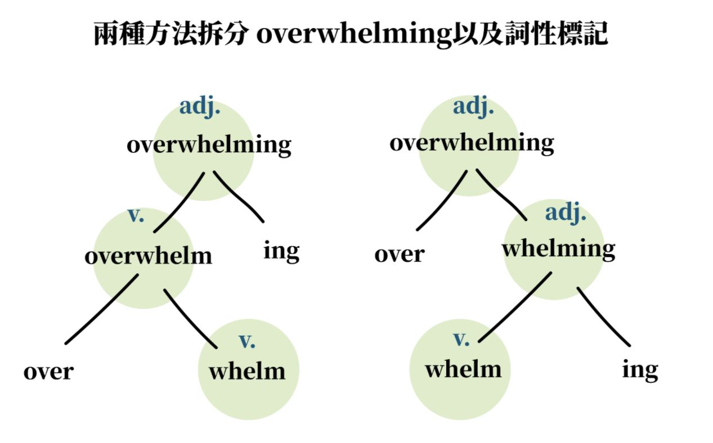

語言學小知識#4 超級變變變！曲折的人森，屈折的語言！

經過前兩課的洗禮之後，相信大家對於語言的基本構成、以及它的分類已經有很好的理解了，如果還沒的話趕快回去複習 -> 語言學小知識#3 詞綴家族大解析！字根與前中後綴（下）今天要來繼續分享一個關於詞性與詞形變化的主題。首先，這個主題牽涉到了語言的分類。
斯斯有三種，語言千百種
我們一般分類語言的方式有兩種，第一種是依照語言演進順序下去分的語言系屬分類，以「某某語言跟某某語言具有同樣祖先」這種方式來分類。舉例來說，印歐語系、拉丁語系，漢藏語系就是屬於這種分類方式。
另一種是依照個別語言的結構、文法特色下去分的語言形態分類，舉例來說，綜合語、孤立語，屈折語就屬於這種分類方式。而今天我們要介紹的主角也就是屈折語啦！
屈折語是啥？詞形變化與派生詞
在前兩篇文章我們有練習過將一個字拆回原本的基本詞素，我們今天將會講得更加深入一些，看看下面的例子：
- teach-er
- teach-es
我們現在都能夠輕鬆地將詞素拆分出來，先給自己一個大大的鼓勵。不過這邊請大家仔細觀察，上面兩個字都是以 teach 作為字根的變化，但是接續的兩個後綴 -er 以及 -es，擁有一樣的功能嗎？其實阿，在語言學上我們會將兩者是為不同的變化。 teach 本身是一個動詞，加了 -er 後綴之後變成了名詞「老師」，但加了 - es 之後的 teaches ，仍然是動詞，只是表示動詞現在式第三人稱的變化。若是增加了詞綴使詞性發生變化，我們就稱這個變化為派生變化（Morphological derivation）﹔如果仍然維持原詞性，我們就稱這個變化為詞形變化，或者屈折變化（Inflection），大家是不是聽到我們即將介紹的主題了呢？
兩種方式來破壞「Overwhelming」！
那麼，屈折變化跟詞形變化被加入一個字時，有先後順序的問題嗎？關於這點，其實語言學家有歸類出一些通則喔！我們通常會發現的法則是詞形變化先被加上，然後再加上曲折變化，比如說以下兩個例子：
- talk -> talker （詞形變化，動詞轉名詞）-> talkers（屈折變化）
- relate -> relative （詞形變化，動詞轉名詞）-> relatives（屈折變化）
但是但是！也有以下的一些例外，今天的第二個練習，我們來試試看將Overwhelming 這個字拆回最基本單位－詞素。結果如何呢？聰明的你是不是發現了有兩種不同的順序可以分開這兩個字？第一種方式是先拆開尾綴 -ing ，表示方法＝((over-whelm)-ing)；第二種方式是先拆開前綴over- ，表示方法＝(over-(whelm-ing))。如果還是一頭霧水，看下面的圖例會變得更加清楚！
這個圖例也是語言學家們常常拿來拆分一個字的方式，也就是使用樹狀圖。有一點值得注意的地方是，在拆分過程中我們會發現，原來詞素不一定是依照同樣的先後順序被加入一個字的......換言之，overwhelming其實一點都不overwhelming，只有兩種拆分方式。大家可以想像如果這個字更長，就會衍生出更多種拆成詞素的順序！
經過屈折語各種變化的介紹之後，有沒有覺得自己又更加認識英文了一些呢？在這篇文章最後的最後，也讓大家思考兩個不同的問題：
- Unconditionally 具有幾種拆成詞素的順序呢？
- 屈折變化有可能在同一個字上發生很多次嗎？
我們下回見！